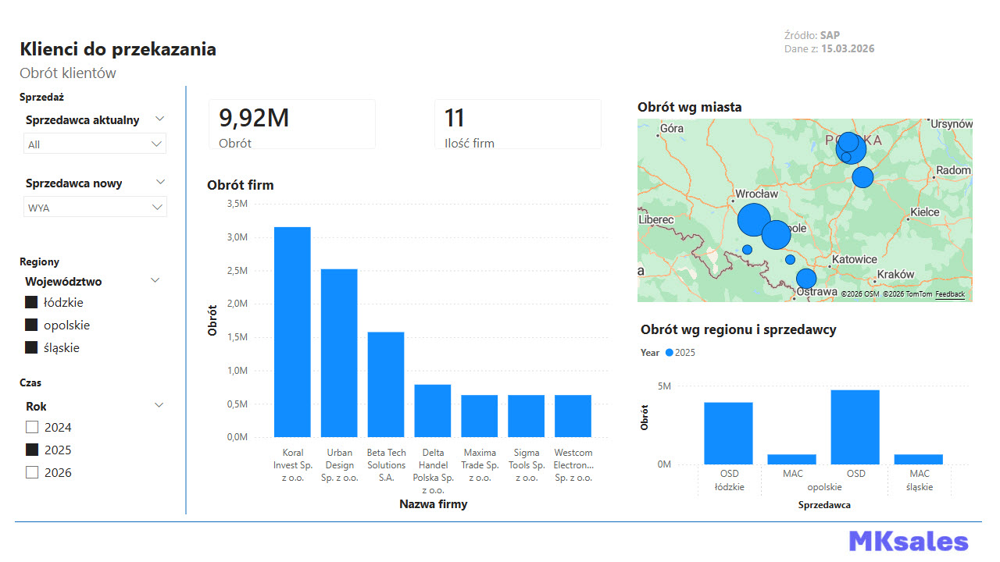
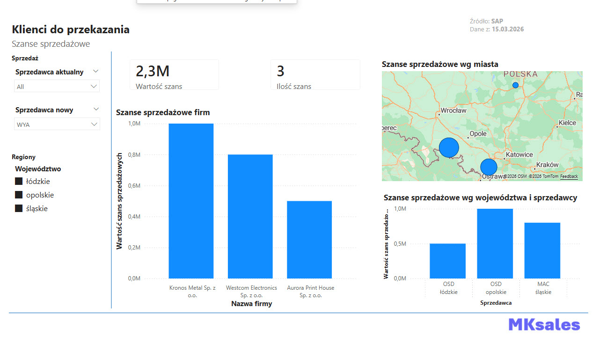
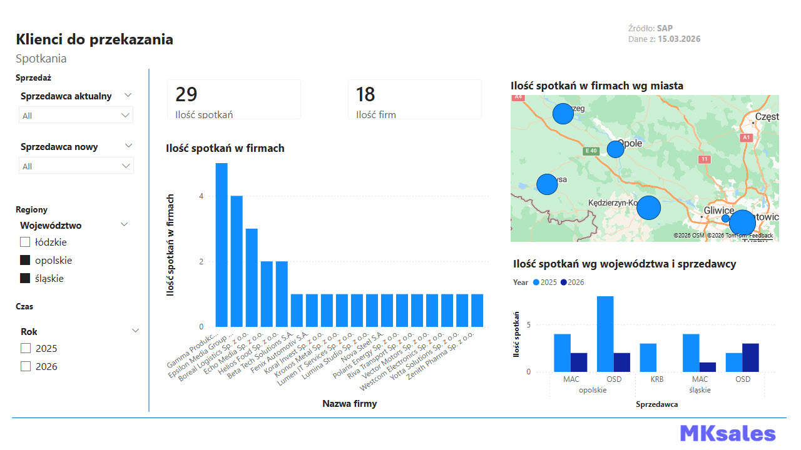
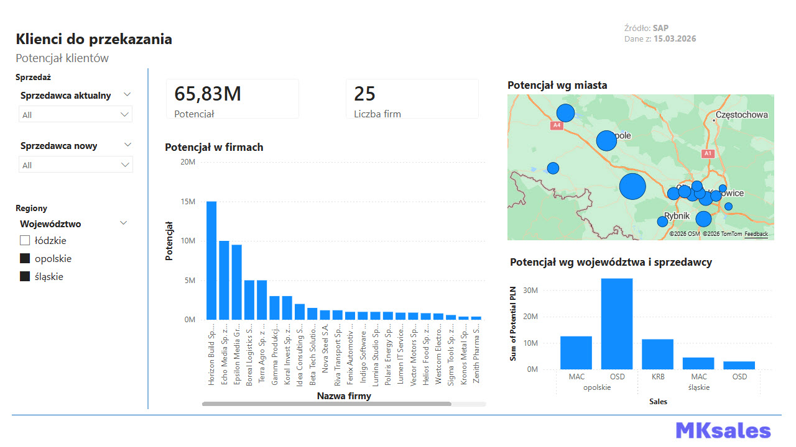
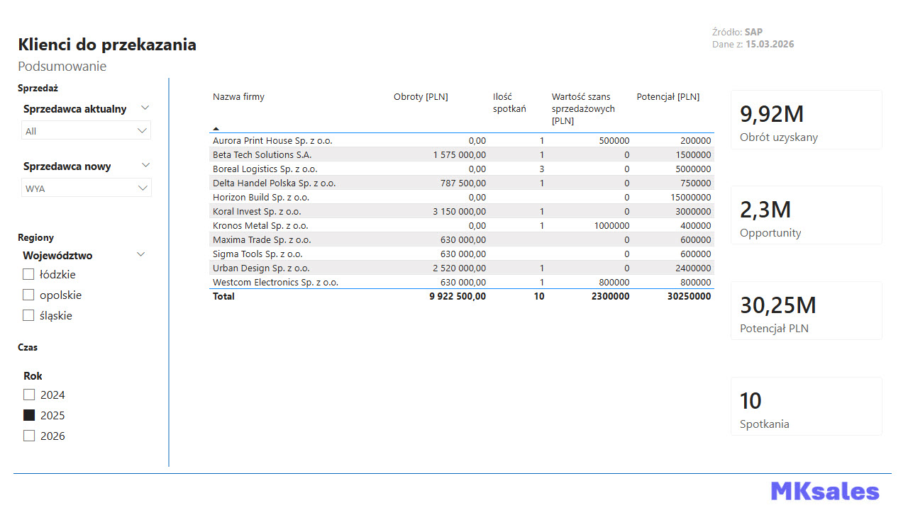

Dashboard wspierający decyzję przypisania klientów do nowego sprzedawcy b2b. Bierze pod uwagę historyczne obroty klientów, ilość spotkań, szanse sprzedażowe oraz potencjał klienta. Pokazuje na mapie wybranych klientów. Dashboard wykorzystany w realnej sytuacji, poniżej zrzuty z wygenerowanymi danymi. KPI, segmentacja klientów, mapy.
Celem jest przypisanie klientów po sprzedawcy zmieniającym pracę (OSD) do reszty zespołu, w tym nowej pracownicy (WYA). W pierwszej kolejności patrzymy na obrót aktualny, żeby zabezpieczyć kupujących klientów oraz aktualne szanse sprzedażowe. Decyzję można podjąć na podstawie lokalizacji i wielości obrotu (np. więksi klienci dla bardziej doświadczonych pracowników). Dodatkowymi czynnikami jest ilość spotkań (znak, że coś się ważnego działo u klienta), natomiast potencjał służy do priorytetyzacji dalszych działań.
Po wybraniu klientów do przepisania uzupełniamy tabelę "przeniesienia", natomiast w zakładce "podsumowanie" zobaczymy tabelę z zebranymi parametrami przekazanych klientów.
Dashboard można rozbudować o branżę klientów, żeby posegmentować ich i usprawnić przygotowania do spotkań.




